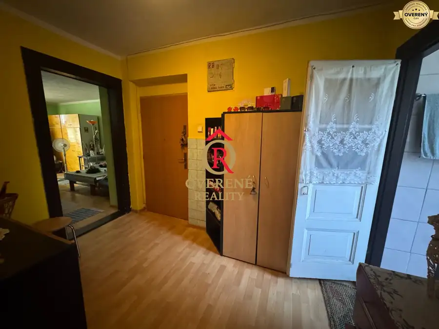
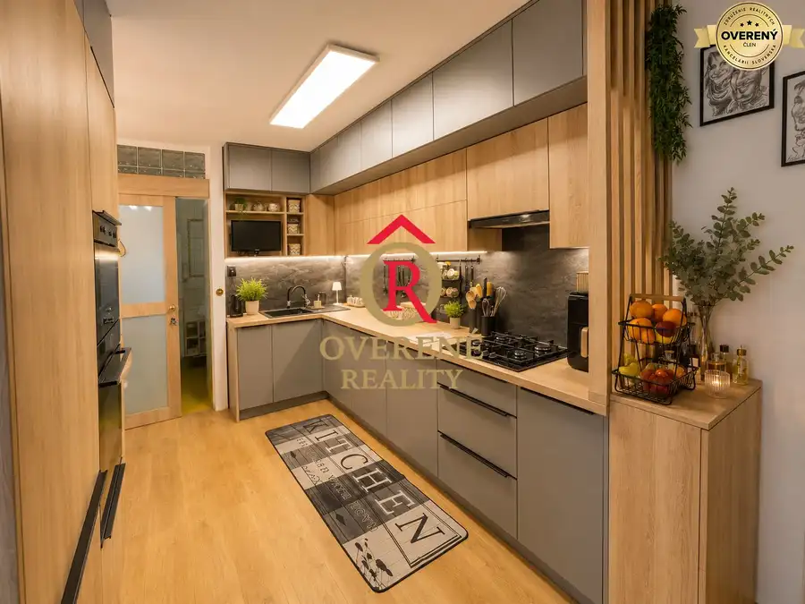
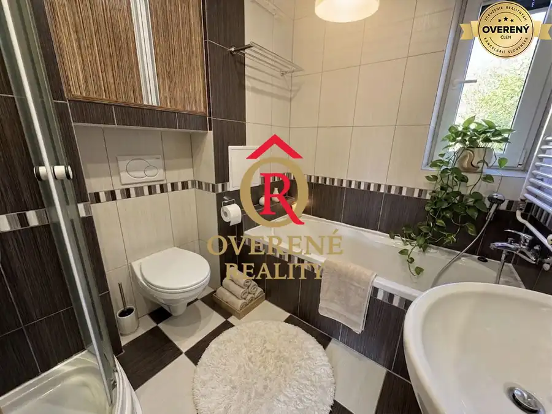

NA PREDAJ - Novostavba Bungalovu v Svätom Kríži
Svätý Kríž
- Dispozícia4-izbový
- Plocha137 m²
- Poschodie0.
- Vlastníctvoosobné
O nehnuteľnosti
Hľadáte pokojné bývanie v prírode, kde si každý deň vychutnáte nádherné výhľady na hory a celodenné slnko na vlastnom pozemku? Tento štýlový bungalov v obci Svätý Kríž ponúka ideálnu kombináciu komfortu, moderného vybavenia a súkromia. Stačí sa nasťahovať – všetko je pripravené.
ZÁKLADNÉ INFORMÁCIE:
- Novostavba (výstavba 2019 – 2021)
- Zastavaná plocha domu: 137 m²
- Pozemok: 632 m² (rovinatý, slnečný počas celého dňa)
- Prístupová cesta v riešení – ( čaká dom na kolaudáciu )
- Napojenie na kanalizáciu a verejný vodovod
DISPOZÍCIA A VYBAVENIE:
- Vstupná chodba oddelená elegantnými zaťahovacími dverami
- Priestranná obývacia miestnosť spojená s kuchyňou + veľký televízor v cene
- Kuchyňa so spotrebičmi + špajza
- Spálňa s veľkou vstavanou skriňou a kvalitnou masívnou posteľou
- 2× detská izba (nábytok ostáva)
- Šatník / Technická miestnosť
- Kúpeľňa s WC a sprchovým kútom + priestor na práčku a sušičku (práčka v cene)
- Samostatné WC
- Podkrovie využiteľné ako úložný priestor
TECHNICKÉ PARAMETRE:
Tehlová stavba
Strecha: škridla + striekaná izolácia
Plastové okná so sieťkami a žalúziami
Kvalitné hliníkové vchodové dvere
Podlahové kúrenie – infra fólie - (ovládanie cez Wifi, termostat v každej izbe),
Príprava na krb (aktuálne biokrb)
EXTERIÉR:
Elektrická posuvná brána
Terasa so sedením s krásnymi výhľadmi na okolité hory
Príprava na vonkajšiu kuchyňu (prívod vody)
Ovocné stromy na pozemku
Záhradná chatka na náradie
Oplotenie: kombinácia drevo + gabión
Vydláždenie okolo domu aj parkovanie na autá
HLAVNÉ VÝHODY:
Nádherné výhľady na hory priamo z pozemku
Celodenné slnečné svetlo
Kompletné zariadenie v cene – bez ďalších investícií
Moderné a úsporné bývanie
Tichá lokalita obklopená prírodou
Ideálne pre rodinu
Tento dom ponúka komfortné bývanie s dôrazom na detail, svetlo a krásne prostredie. Miesto, kde si každý deň užijete pokoj, súkromie a výhľady, ktoré vás nikdy neomrzia.
Pozrite si video skutočného stavu Nehnuteľnosti : https://www.youtube.com/watch?v=1GnH3jyd0oc
Cena : 349 000€
Cena zahŕňa kompletný právny servis ako aj všetky poplatky spojené s predajom a prepisom Nehnuteľnosti.
Pre viac informácií alebo obhliadku ma neváhajte kontaktovať !
Nikola Jánošová
Parametre
| Rozloha pozemku | 632 m² |
|---|---|
| Zastavaná plocha | 137 m² |
| Poschodie | prízemie |
| Počet izieb | 4 |
| Vlastníctvo | osobné |
| Odvoz odpadu | áno - separovaný |
| Voda | verejný vodovod |
| El. napätie | 230/400V |
| Plyn | nie |
| Kanalizácia | áno |
| Internet | wifi |
| Kúpeľňa | sprchovací kút |
| Vykurovanie | vlastné - elektrické |
| Terasa | áno - 1 |
| Garáž | nie |
| Parkovanie | vlastné vyhradené |
| Inžinierske siete | áno |
| Postavené z | tehla |
| Zariadenie | zariadený |
| Zateplený objekt | áno |
| Krb | predpríprava |
| Predzáhradka | áno |
| Bezbariérový prístup | áno |
| Okná | plastové |
| Terén | rovina |
| Novostavba | áno |
| Dátum zverejnenia | 10. 6. 2026 |
Kde to je
Mohlo by Vás zaujímať

Byt 109 999 €Priestranný 2,5-izbový byt s výmerou 80 m² v Ružomberku Ružomberok 2,581.73 m²3. podlažie Byt sa nachádza na 3. poschodí zrekonštruovaného bytového domu a ponúka 81,73 m² obytnej plochy. K bytu patrí aj veľká pivnica. Najväčšou prednosťou…
Byt10 229 000 €Predaj 3-izbového bytu – ul. 1. mája | Krb | Vlastné kúrenie | Lodžia Liptovský Mikuláš 3-izbový80.5 m²1. podlažie Spoločnosť Overené Reality Vám ponúka na predaj priestranný a kompletne zrekonštruovaný 3-izbový byt na ulici 1. mája v Liptovskom Mikuláši. Byt sa…
Byt 149 000 €3-izbový byt po kompletnej rekonštrukcii, Istebné, zariadený, 2 pivnic Istebné 3-izbový62 m²2. podlažie Ponúkame na predaj slnečný a kompletne zrekonštruovaný 3-izbový byt v obci Istebné, ktorý ponúka pohodlné bývanie v pokojnom prostredí s peknými…